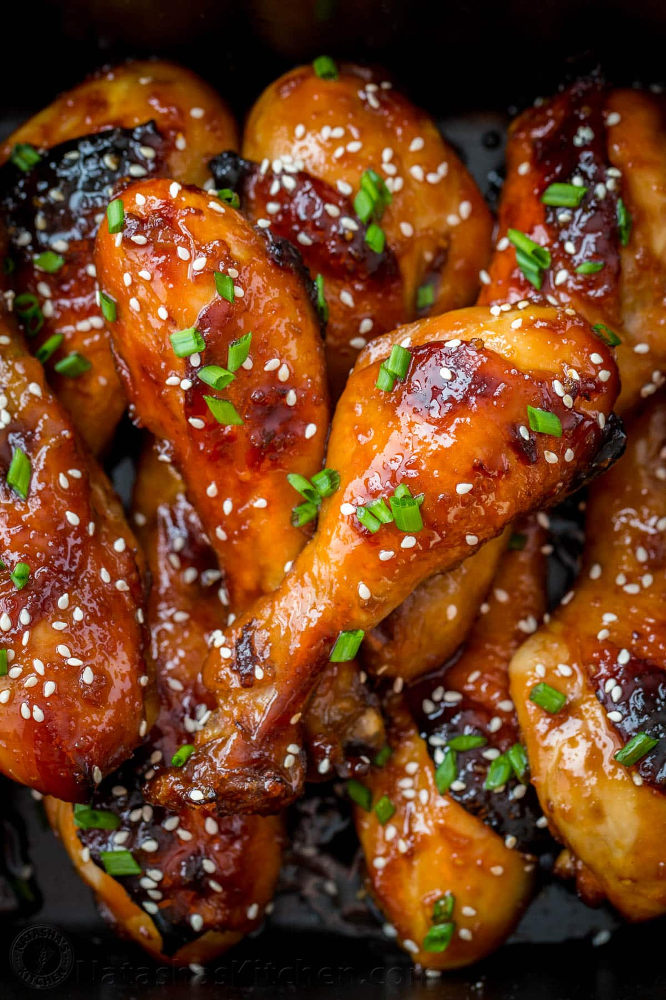

Honey Glazed Chicken

Description
Honey glazed chicken is a savory and sweet dish that features tender chicken thighs or breasts coated in a sticky honey glaze. The glaze is made from a mixture of honey, soy sauce, apple cider vinegar, and cornstarch, which creates a caramelized and flavorful coating on the chicken. This dish is typically baked in the oven and can be garnished with sesame seeds and green onions for added texture and color. The combination of sweet and salty flavors in honey glazed chicken makes it a delicious and comforting meal that is perfect for a cozy night in.
Ingredients
- Chicken thighs or breasts
- Salt and pepper
- Garlic powder
- Paprika
- Olive oil
- Honey
- Soy sauce
- Apple cider vinegar
- Cornstarch
- Sesame seeds (optional)
- Green onions (optional)
Steps
- Preheat the oven to 425°F (220°C).
- Season 4 chicken thighs or breasts with salt, pepper, garlic powder, and paprika.
- Heat 2 tablespoons of olive oil in an oven-safe skillet over medium-high heat. Add the chicken and cook for 4-5 minutes on each side until browned.
- In a small bowl, whisk together 1/4 cup of honey, 2 tablespoons of soy sauce, 1 tablespoon of apple cider vinegar, and 1 teaspoon of cornstarch.
- Pour the honey glaze over the chicken and transfer the skillet to the oven.
- Bake for 15-20 minutes, basting the chicken with the glaze every 5 minutes, until the chicken is cooked through and the glaze is caramelized and sticky.
- Garnish with sesame seeds and green onions, if desired, and serve.